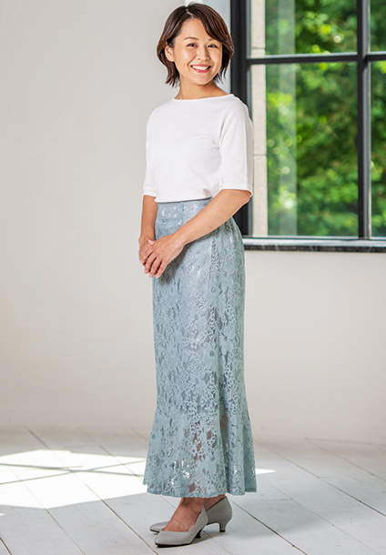

PROFILE
林 真梨子



林 真梨子Mariko Hayashi
| カテゴリ | MC/司会、ナレーター、声優、宅録、講師、役者、モデル |
|---|---|
| 地域 | 関東 |
| 身長 | 152cm |
| 趣味 | 写真撮影、鉄道、大人のための朗読同好会運営 |
| 特技 | 遠泳（2才から水泳を始め、元水泳選手） |
| 資格 | 世界遺産検定1級
デジタル情報記録技術者 英検2級 普通自動車免許 |
| 音声サンプル | |
| SNS |
経歴
【TV/VPナレーション】
- Yakult化粧品「パラビオシリーズ」商品紹介VPナレーション
- Yakult化粧品「コクルムシリーズ」商品紹介VPナレーション
- 昭和産業新卒採用ムービーナレーション
- 全国信用協同組合連合会本社移転式典ナレーション
- 東京都中小企業振興公社サービス紹介VPナレーション
- ブリヂストンセミナー紹介VPナレーション
- ブリヂストンサービス紹介VPナレーション
- NECサービス紹介VPナレーション
- アジア航測事業紹介VPナレーション
- 山口学芸大学学校案内VPナレーション
- ともえスクール法人向け福利厚生サービス「育サポ」紹介VPナレーション
- プレミアムアルトレット店頭サイネージVPナレーション
- 山口短期大学学校紹介VPナレーション
- 山口芸術短期大学学校紹介VPナレーション
- 日本社会事業大学学校紹介VPナレーション
- 武庫川女子大学学校紹介VPナレーション
- 東海エンジニアリング株式会社事業紹介VPナレーション
- 株式会社キビテクサービス紹介VPナレーション
- Fusic学校連絡アプリ「Sigfy」サービス紹介VPナレーション
- シープメディカル株式会社サービス紹介VPナレーション
- ケイズ歯科サービス紹介VPナレーション
- スタディストサービス紹介VPナレーション
- ソーラーフロンティアサービス紹介VPナレーション
- ダトラサービス紹介VPナレーション
- HOYAサービス紹介VPナレーション
- 山本製作所商品紹介VPナレーション
- READYFORサービス紹介VPナレーション
- SMBCコンシューマーファイナンスセミナー紹介VPナレーション
- ギミックスサービス紹介VPナレーション
- さかのした合同会社「みんなの調理実習」サービス紹介VPナレーション
- 全国信用協同組合連合会BS特番用ナレーション
- カルビーcmナレーション
- プレミアムアウトレット新店舗オープンcmナレーション
- お酒買取専門店ファイブニーズcmナレーション
- 東京都中小企業振興公社「デザインと経営」シリーズ番組ナレーション
【MC】
- Yakultオンラインセミナー「プロバイオティクスはストレスを緩和する」
- ユーシービージャパン乾癬オンラインセミナー「あきらめないで！乾癬のこと、治療のこと、これからのこと」
- 東京都中小企業振興公社オンラインセミナー「デザインで切り拓く経営のネクストステージ！」
- 高島屋「秋の音楽祭」
- 高島屋「春の音楽祭」
- 鎌倉新書「お別れの会」式典
- 日本ウォーキング協会「ウォーキング横浜」イベント
- つなぐNPO「やまなしてくてく歩き」イベント
【吹替】
- リンクトインラーニング（洋画アテレコ）
- ともえスクール「中2でもわかる育休講座」（アニメーションアテレコ）
【アプリ音声】
- 「骨かるた」読み上げ
【ラジオ】
- 山梨放送「婚活バスは山梨へ」オーディオドラマ ※平成26年文化庁芸術祭優秀賞
- 山梨放送「GOGOイチ」ゲスト
- 山梨放送「キックス」ゲスト
【TVボイスオーバー】
- 日本テレビ「スッキリ」
- フジテレビ「ノンストップ」
【TV出演】
- 日本テレビ「月曜から夜更かし」VTR
- 日本テレビ「スクール革命」VTR
- フジテレビ「PRICELESS～あるわけねぇだろ、んなもん！～」同僚役
- BSテレビ東京「結婚式挙げてみませんか」スタジオトーク
【朗読劇/影絵劇語り】
- 「葵上」（東京六本木・N-One）
- 「空ゆく雲、今、かたち…」（東京六本木・N-One）
- 「猫は生きている」（山梨・児童支援施設）
- 「カッパ」（山梨・児童支援施設）
【舞台】
- 「たけくらべ」作・演出 望月六郎（東京浅草東洋館劇場）
- 「見えない人たち」作・演出 是枝正彦（銀座みゆき館劇場）
- 「悲しき天使」演出 森岡利行（新宿space107）
- 「セツナコウロは港行き」（東京・シアターグリーン）
- 「Dragon QuestionⅡ」（東京・萬劇場）
- 「あの月にメルはキミの横顔」（山梨・森の劇場）
- 「幻山の龍ケ石」（山梨・森の劇場）
【モデル】
- 東京ウォーカー
- 治療院マーケティング研究所 整体DVDモデル
【講師】
- 東京都港区立港南小学校「思いを伝える声と話し方」
- ボイストレーニング講座「zoomで差が出る『いい声』の出し方」
- 品川ママの学び講座「私の産後うつを救った、1回10分間のマインドフルネス呼吸法」
- 品川区子育て支援施設「親子のおはなし会」読み聞かせ
【執筆】
- つなぐNPO「山梨フィールドミュージアムガイドブック」